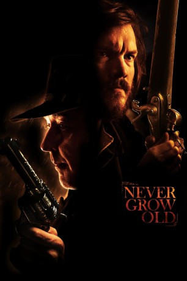

#11683 Never Grow Old
 
 IMDB-Wertung: 5.8 / 10
IMDB-Wertung: 5.8 / 10  Tomatometer: 92
Tomatometer: 92  Metascore: 65
Metascore: 65 
Willkommen in Garlow, einer von Ausschweifungen, Gier und Mord geprägten Stadt. Diese einst friedliche Grenzstadt ist zu einer Lastergrube geworden, nachdem der bösartige gesetzeslose Dutch Albert und seine Bande dort eingefallen sind - und begonnen haben, ihre Gegner gnadenlos dem Erdboden gleichzumachen. Der Bestatter Patrick Tate verdient daran zwar ein hübsches Sümmchen, aber er muss nun wählen zwischen dem Blutgeld, das er durch die Bestattung der Opfer erhält und den Drohungen, denen er und seine Familie in diesem harten und düsteren Westen ausgesetzt sind. Die Zeit zu handeln wird knapp ...
Jahr: 2019
Dauer: 99 Minuten
FSK: 16
Land: Irland Studio: Rézo FilmsTonspuren:
Untertitel: Deutsch,
Auflösung: 720p (1280x536) Größe: 1720 MB
Genre: Action, Drama, Western
Regisseur: Ivan Kavanagh
Drehbuch: Ivan Kavanagh
Soundtrack: Aza Hand, Will Slattery, Gast Waltzing
Darsteller:
 Emile Hirsch als Patrick Tate
Emile Hirsch als Patrick Tate John Cusack als Dutch Albert
John Cusack als Dutch Albert Déborah François als Audrey Tate
Déborah François als Audrey Tate- Molly McCann als Emma Tate
- Quinn Topper Marcus als Thomas Tate
 Danny Webb als Preacher Pike
Danny Webb als Preacher Pike Tim Ahern als Sheriff Parker
Tim Ahern als Sheriff Parker- Blake Berris als Fred
- Paul Reid als Ed
 Antonia Campbell-Hughes als Maria Pike
Antonia Campbell-Hughes als Maria Pike- Anne Coesens als Mrs. Crabtree
- Katie Creaven als Temperance Singer
 Claire Johnston als Widow of Elderly Man
Claire Johnston als Widow of Elderly Man- Liz McMullen als Dorothy Peale
- John Paul O'Driscoll als Bar patron
- Paul Ronan als Bill Crabtree
- Leila Saint James als Elsa Edwards
- Sam Louwyck als Dumb-Dumb
- Nickel Bösenberg als Jim Emmet
- Sean Gormley als Pete
- Niceol Blue als Temperance Singer
- Manon Capelle als Emily Crabtree
- Nicolas de Lavergne als Pete's father
- Éric Gigout als Man in Mourning in Funeral
- Steve Karier als Schuster
- Eloise Kerrin-Wright als Peale child
- Julie Kieffer als Rosie
- Peter Newington als Anthony Peale
- Dick O'Hary als Cherokee Thomson
- Camille Pistone als Sicily
- Jean-François Wolff als Prospector
Datei: X:\2019(N-Z)\Never Grow Old (2019, FSK16, 1280x536).mkv seit 16.08.2019
Festplatte: HD 2018(G-Z)-2019(A-Z)
 Es gibt insgesamt 62 Filme in der Gruppe '2019(N-Z)'
Es gibt insgesamt 62 Filme in der Gruppe '2019(N-Z)'